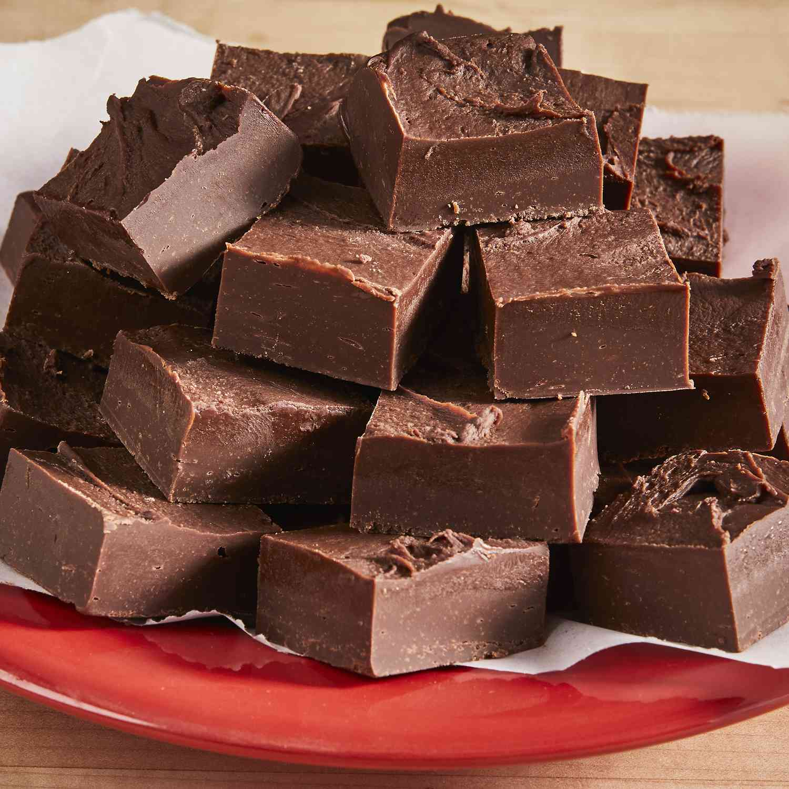

The Worlds Greatest Fudge

So, self proclaimed "World's Greatest" fudge. My uncle Mike used to make the best fudge that had everyone asking for more and the recipe!
My uncle never gave the recipe out, not even to his wife or kids. He would always laugh and say the same thing every time, "It's very easy, so simple!"
I miss that man very much. To honor his memory I had to go on the scavenger hunt to find the "World's Greatest" fudge, recipe. It was creamy, thick, and buttery.
The perfect balance of texture, sweetness, and chocolatey-ness. My research led me to the old Hershey's recipe book from the 1930's. Here's hoping this is it!
Ingrediants
- 2/3 cup cocoa
- 3 cups sugar
- 1/8- or 1/4 teaspoon salt
- 1 1/2 cups milk
- 1/4 cup butter
- 1 teaspoon vanilla
- Thoroughly combine cocoa, sugar, and salt in a heavy 4-quart saucepan: stir in milk
- Bring to a bubbly boil on medium heat, stirring occasionaly
- Boil without stirring to 234 degrees or the soft ball stage; Bulb of candy thermometer should not rest on bottom of saucepan
- Remove from heat; add butter and vanilla; DO NOT STIR
- Cool at room temperature until 110 degrees; beat until fudge thickens and loses some of its gloss
- Quickly spread in a lightly buttered 8- or 9inch square pan; cool
(Makes 3 dozen squares)